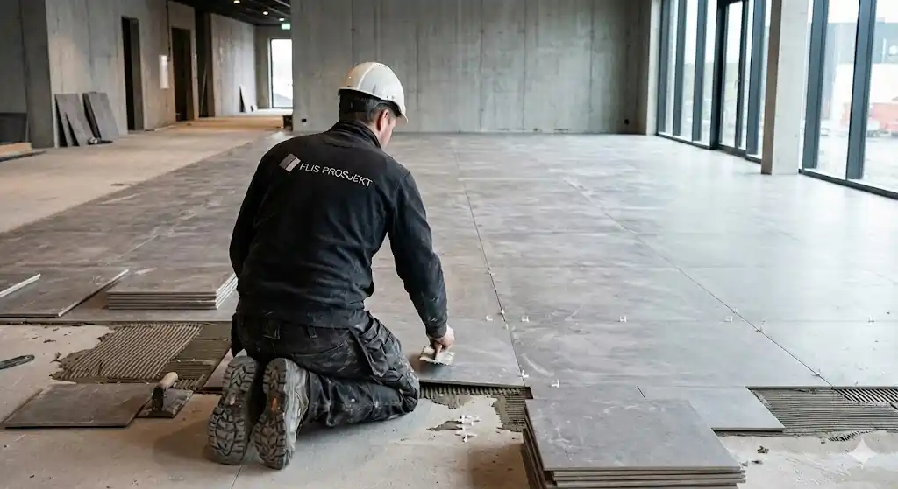

Flislegging · Oslo
Flislegging for ditt prosjekt.
Vi flislegger kommersielle bygg og tilpasser oss både store og små prosjekter. Fra kontor- og næringslokaler til hotell og fellesarealer – tilpasset byggets funksjon, bruk og krav.
NæringsbyggNatursteinVåtrom
01 — Tjenester
Våre tjenester
Vi leverer flislegging til byggets funksjon, bruk og krav.

02 — Slik jobber vi
Presisjon i hver flis
Et flisprosjekt står og faller på underlaget. Vi avklarer forholdene før vi starter, og legger flisen etter et mønster som er planlagt for arealet – ikke bare for bildet.
- Underlag – kontrollert før legging.
- Mønster – planlagt for arealet.
- Fuger – jevne og holdbare.
03 — Prosessen
Fire steg
Vi avklarer omfang og tid før vi starter.
- Befaring
Areal, underlag og krav.
- Tilbud
Omfang, materialer og pris.
- Legging
Flis, mønster og fuging.
- Overlevering
Gjennomgang og rydding.
«Vi leverer flislegging tilpasset byggets funksjon, bruk og krav.»
Har du et flisprosjekt?
Kontakt oss, vi bistår gjerne i prosjektet – stort eller lite.